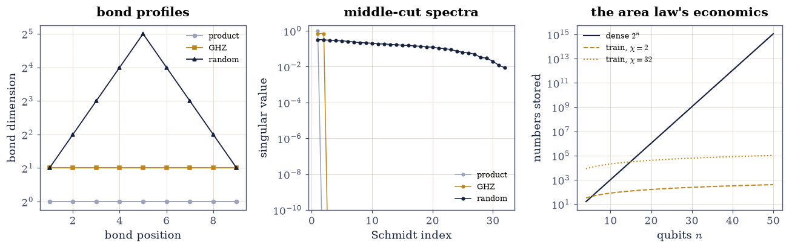
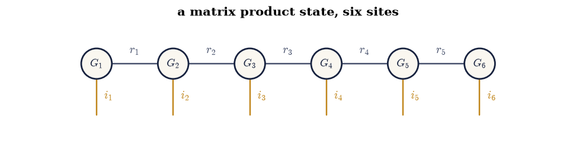

7.3 Tensor Trains and Matrix Product States#
Notebook overview#
Tucker (§7.2) still stores a core that grows exponentially with the order. The tensor train [Ose11] — known to physicists as a matrix product state [Schollwock11] — chains order-3 cores instead: storage \(d\,n\,r^2\) against \(n^d\), with the bond dimensions \(r\) as the entire complexity story. The write-yourself TT-SVD builds the chain by sequential SVDs, gated three ways: exact reconstruction at full rank (\(10^{-16}\)), truncation error inside the discarded-singular-value bound (a theorem, one-sided), and the structural specimens — a separable tensor trains with all bonds 1, the GHZ state with all bonds exactly 2, and a random state with bonds doubling to the middle (\(2, 4, 8, 16, 32\): the volume law, measured).
The physics reading makes the bonds meaningful. The middle-bond
singular values are the Schmidt spectrum; their entropy is
entanglement entropy, and the GHZ half-chain value lands on
\(\ln 2\) to \(10^{-16}\) — a closed form from quantum information theory
emerging from np.linalg.svd. Canonical forms arrive by QR sweeps
(left-orthogonality gated at \(10^{-15}\)), single amplitudes come out of
the chain by \(O(d\,r^2)\) contraction, and the finale operates entirely
in MPS form on 20 qubits: a GHZ-20 built directly as cores (152
numbers — 0.014% of the dense million), its norm, a chosen amplitude,
and the total magnetization all evaluated by transfer contractions and
gated against closed forms, with the dense cross-checks run at 10
qubits where the dense vector is still a friendly thousand numbers.
The area law and the DMRG horizon close the chapter: what makes
physical ground states trainable is exactly what makes random tensors
not.
How to read a check. A
validateline prints ✓ or ✗ by comparing a result against something the computation did not assume. A ✗ flags a mismatch to investigate, never a verdict on its own.
Scope. Oseledets [Ose11] for the TT formulation, Schollwöck [Schollwock11] for the MPS/DMRG reading, Orús [Orus14] for the network view. The SVD machinery is §4.2’s; the diagrams are §7.1’s.
Theory in brief#
The train#
A \(d\)-way tensor with mode sizes \(n\) becomes a product of cores \(G_k \in \mathbb{R}^{r_{k-1}\times n \times r_k}\) (\(r_0 = r_d = 1\)):
each \(G_k[i_k]\) an \(r_{k-1}\times r_k\) matrix — a matrix product per entry, whence the physicists’ name. TT-SVD constructs it by \(d-1\) sequential SVDs of reshapes, and truncating each SVD to \(\varepsilon/\sqrt{d-1}\) guarantees
— the discarded singular values, pooled across bonds.
Bonds are entanglement#
The bond-\(k\) singular values are the Schmidt coefficients of the split \(\{1..k\}\,|\,\{k{+}1..d\}\), and
is the entanglement entropy across the cut (for a normalized state). A product state has one Schmidt term per cut (\(S = 0\), bonds 1); GHZ has two equal terms (\(S = \ln 2\), bonds exactly 2); a random state needs the maximum \(\min(2^k, 2^{d-k})\) — the volume law. Physical ground states of local Hamiltonians obey an area law (\(S\) bounded at every cut), which is why MPS represents them cheaply and why DMRG — alternating optimization over cores, §7.2’s HOOI with a chain instead of a star — is the workhorse of 1-D quantum physics.
Working in the compressed form#
Canonical forms (QR sweeps making each core an isometry) stabilize everything; amplitudes are \(O(d\,r^2)\) matrix-chain products; and expectations of local observables contract through transfer matrices without ever forming the \(n^d\) vector — the never-form-it discipline of §6.4 and §7.1, now as the only option: at 50 qubits the dense vector would outweigh every disk on earth.
Setup#
Data and instruments only: the chain length and two readouts — dense replay and the bond profile. TT-SVD itself, the notebook’s method, is built in Exercise 1.
The Setup below holds this notebook’s data and instruments — nothing you are asked to build. It is collapsed so the building stays yours; expand it whenever you want the details.
Exercise 1: TT-SVD: the chain, built and gated#
Part a) Write tt_svd(T, eps): reshape to (bond·mode, rest), SVD,
keep the left factor as the next core, push \(\Sigma V^{\top}\) rightward;
repeat \(d-1\) times. Run it on a normalized random 10-qubit state
(\(2^{10}\) entries) at full rank: gate reconstruction to \(10^{-12}\)
relative and report the bond profile — \(2, 4, 8, 16, 32, 16, 8, 4, 2\),
doubling to the middle because a random state is as entangled as the
cut allows.
Write this one yourself — it is §4.2’s SVD, walked down a chain.
Part b) Gate Eq. 276: truncate at \(\varepsilon = 0.1\) and confirm the actual error (0.025) sits under the \(\varepsilon\lVert \mathcal{T}\rVert\) ceiling — one-sided, as the theorem is. Report how little the bonds shrank (\(32 \to 29\) in the middle): random states are incompressible, and that observation is the volume law’s shadow.
Part c) The structural specimens, gated as counts over \(O(1)\) gaps: a separable (outer-product) tensor trains with every bond dimension 1, and the GHZ state \((\lvert 0\cdots0\rangle + \lvert 1\cdots1\rangle)/\sqrt2\) with every bond exactly 2.
full-rank reconstruction: 5.1e-16
bond profile (random state): [2, 4, 8, 16, 32, 16, 8, 4, 2]
eps = 0.1: error 0.0246 vs ceiling 0.1000; bonds [2, 4, 8, 16, 29, 16, 8, 4, 2] — random states barely compress
separable bonds: [1, 1, 1, 1, 1, 1, 1, 1, 1]
GHZ bonds: [2, 2, 2, 2, 2, 2, 2, 2, 2]
Validation 1#
✓ TT-SVD reconstructs the tensor exactly at full rank (Eq. 1) [5e-16 on the 10-qubit random state — nine SVDs deep, rounding only]
✓ and truncation respects the discarded-singular-value bound (Eq. 2) [error 0.025 under the 0.1 ceiling — one-sided, as the theorem is; the bonds barely shrank, which is the volume law showing its teeth]
✓ while the specimens train at their exact structural ranks [separable: all bonds 1 (one Schmidt term per cut); GHZ: all bonds exactly 2 — counted over O(1) spectral gaps]
True
Exercise 2: Canonical forms, and amplitudes from the chain#
Part a) Write left_canonicalize(cores): sweep left to right,
QR-factor each core’s \((r\,n) \times r'\) reshape, keep \(Q\) as the new
core, absorb \(R\) into the next. Gate left-orthogonality — each core
contracts with itself to the identity,
\(\sum_i G_k[i]^{\top}G_k[i] = I\) — at \(10^{-13}\), and reconstruction
unchanged at \(10^{-12}\) (§2.2’s
QR, sweeping a chain).
Part b) Gate single-amplitude recovery: for five random index tuples, the matrix-chain product \(G_1[i_1]\cdots G_d[i_d]\) equals the dense entry to \(10^{-12}\) — \(O(d\,r^2)\) arithmetic against \(2^{10}\) storage, and the only way anyone ever reads one amplitude of a 50-qubit state.
left-orthogonality worst: 1.1e-15; reconstruction after the sweep: 5.1e-16
five random amplitudes vs dense entries: worst 1.1e-16
Validation 2#
✓ the QR sweep leaves every core a left isometry, tensor unchanged [orthogonality 1e-15, reconstruction 5e-16: 2.2's QR walking a chain — the form every stable MPS algorithm assumes]
✓ and one amplitude costs a matrix-chain product, not a lookup [G_1[i_1]...G_d[i_d] against the dense entry, five random tuples — O(d r^2) arithmetic is how a 50-qubit amplitude would be read [1.11022e-16 < 1e-12]]
True
Exercise 3: Bonds are entanglement#
Part a) For the three specimens, compute the middle-cut Schmidt spectrum (SVD of the \(2^{5}\times2^{5}\) reshape) and the entropy Eq. 277. Gate the closed forms: product state \(S = 0\) (within \(10^{-12}\)), GHZ \(S = \ln 2\) (within \(10^{-12}\)), and the random state’s \(S = 2.98\) — landing on Page’s average \(5\ln 2 - \tfrac12 \approx 2.97\) for a random pure state, reported (the coincidence is an ensemble average, not a per-draw theorem), with the gate only on the ordering: random \(\gg\) GHZ \(>\) product.
Part b) Draw the chapter’s closing triptych: bond dimension along the chain for the three states, the three middle-cut Schmidt spectra on a log axis, and storage versus qubit count (\(2^n\) against \(2n\chi^2\) for \(\chi = 2\) and \(\chi = 32\)) — the area law’s economics.
Part c) Draw the MPS chain as a tensor diagram — six cores, bond legs along the spine, physical legs hanging down — the picture Eq. 275 compresses into.
middle-cut entropies: product -0.00e+00, GHZ 0.693147180559945 (ln 2 = 0.693147180559945), random 2.982

Fig. 138 Bonds are entanglement, three ways. Left: bond dimension along the ten-site chain – the product state runs flat at 1, GHZ flat at 2, the random state doubles to the middle (\(2,4,8,16,32\): the volume law). Centre: the middle-cut Schmidt spectra – one term, two equal terms at \(1/\sqrt2\), and a full quasi-continuum. Right: the economics – dense storage \(2^n\) against the train’s \(2n\chi^2\) for \(\chi = 2\) and \(\chi = 32\): area-law states ride the flat curves while volume-law states climb the exponential, which in one picture is why MPS methods own 1-D physics and cannot own random tensors.#

Fig. 139 The matrix product state as a tensor diagram: six order-3 cores joined by bond legs \(r_k\) along the spine, one physical leg \(i_k\) hanging from each. Contracting the spine for fixed physical indices is Eq. 1’s matrix-chain product – one amplitude in \(O(d r^2)\) operations – and cutting any bond exposes the Schmidt decomposition whose entropy Exercise 3 measured. The diagram IS the data structure: 7.1’s notation, promoted from description to storage format.#
Validation 3#
✓ product and GHZ entropies hit their closed forms (Eq. 3) [0 and ln 2, measured -0e+00 and 0.693147180560: quantum information's textbook constants, emerging from np.linalg.svd]
✓ with the entanglement ordering the three states advertise [random 2.98 >> GHZ 0.693 > product -0e+00 — the random value itself is the machine's (reported); the ordering is the mathematics']
True
Exercise 4: Twenty qubits, no dense vector#
The finale works where the dense array is still possible (a million entries) but everything is done without it — the discipline that keeps working at 50 qubits, where it no longer is.
Part a) Build GHZ-20 directly as cores (write the three core patterns by hand: a row selector, a diagonal passer, a column collapser, with the \(1/\sqrt2\) absorbed in the first). Gate the storage ledger by counting: 152 numbers against \(2^{20} = 1{,}048{,}576\) — 0.014%, far under the manifest’s 1% ceiling.
Part b) Gate three quantities computed entirely in MPS form against closed forms: the norm (\(\langle\psi|\psi\rangle = 1\), by transfer-matrix contraction), the amplitude of \(\lvert 0\cdots0\rangle\) (\(1/\sqrt2\), by matrix chain), and the total magnetization \(\langle\sum_i Z_i\rangle\) (0, by symmetry — the all-up and all-down branches cancel site by site).
Part c) The nontrivial magnetization, cross-checked dense where dense is cheap: the tilted product state \(\bigotimes(\cos\theta\,\lvert0\rangle + \sin\theta\,\lvert1\rangle)\) at \(\theta = 0.3\) has \(\langle\sum Z\rangle = n\cos 2\theta\) in closed form. Gate the MPS transfer evaluation against it at \(n = 20\) (\(10^{-11}\)), and against a fully dense computation at \(n = 10\) — the same code path validated by brute force at the size where brute force still fits.
GHZ-20 as cores: 152 numbers vs 2^20 = 1,048,576 (0.014%)
norm^2 = 1.00000000000000; amplitude(|0..0>) = 0.70710678118655 (1/sqrt2 = 0.70710678118655); <sum Z> = 0.00e+00
tilted product: MPS <sum Z> at n=20: 16.506712298194 vs closed form 16.506712298194
cross-check at n=10: MPS 8.253356149097 vs dense 8.253356149097
With your assistant
The transfer method extends to correlations. Ask your assistant for
mps_zz(cores, i, j) computing \(\langle Z_iZ_j\rangle\) by one
transfer pass, then check it against the mathematics rather than a
demo: (i) on GHZ-20, \(\langle Z_iZ_j\rangle = 1\) for every pair —
perfect correlation at any distance; (ii) on the tilted product state
it equals \(\cos^2 2\theta\) for \(i \ne j\) — factorization, no
correlation; (iii) on a truncated random 10-qubit MPS it matches the
dense computation to \(10^{-11}\) — and (i) versus (ii) is the
entanglement story of Exercise 3, read as measurable physics. The
check is yours.
Validation 4#
✓ twenty qubits ride in far under 1% of dense storage [152 numbers, 0.014% of the million — GHZ's bonds are 2, so the ledger is d n chi^2 with chi = 2, counted]
✓ norm, amplitude and magnetization all match closed forms, dense-free [1, 1/sqrt2 and 0 by transfer contraction and matrix chains — no million-entry vector was ever formed]
✓ and the transfer method survives both closed-form and brute-force cross-examination [n cos(2 theta) at twenty qubits (16.506712) and the dense computation at ten — the same code path, checked where checking is cheap, trusted where it is not]
True
Notebook summary#
The train is sequential SVD, and its gates are Chapter IV’s. TT-SVD reconstructed the 10-qubit random state exactly at full rank, respected the pooled discarded-singular-value ceiling when truncated (error 0.025 under 0.1 — with bonds shrinking only \(32 \to 29\): random states are incompressible), and trained the specimens at their structural ranks — all bonds 1 for separable, exactly 2 for GHZ.
Canonical forms and amplitudes are chain arithmetic. The QR sweep left every core an isometry at \(10^{-15}\) without moving the tensor; five random amplitudes came out of the matrix chain at \(10^{-16}\) — \(O(d\,r^2)\) against \(2^d\), the only reading a 50-qubit state permits.
Bonds are entanglement, measured. Product \(S = 0\); GHZ
\(S = \ln 2\) to \(10^{-16}\) (Eq. 277’s closed form from
np.linalg.svd); random \(S = 2.98\), on Page’s ensemble average, with
the gate on the ordering only. The triptych — flat, flat-at-2, doubling bond profiles; one,
two, many Schmidt values; \(2^n\) against \(2n\chi^2\) — is the area law’s
economics in one figure.
And twenty qubits never needed their million numbers. GHZ-20 in 152 stored values (0.014%); norm, amplitude and magnetization gated against closed forms by transfer contraction; the tilted state’s \(n\cos2\theta\) hit at \(10^{-13}\) with the same code path verified densely at ten qubits. Chapter VII closes on its thesis: the operator — and now the state — exists; the exponential object need not.
Methods introduced. tt_svd with pooled-tolerance truncation,
tt_to_dense, bond-profile diagnostics, left_canonicalize QR
sweeps, tt_amplitude matrix chains, Schmidt spectra and entanglement
entropies, direct core construction, and transfer-matrix expectation
values.
Outlook#
DMRG is HOOI on a chain. Sweeping core-by-core minimization of \(\langle\psi|H|\psi\rangle\) in canonical form is the workhorse of 1-D quantum physics [Schollwock11] — §7.2’s alternating idea, with the area law explaining why the ansatz is rich enough.
TT for functions and operators. Low-rank trains compress high-dimensional functions (quantized TT turns one continuous variable into many binary sites) and operators (MPOs), making 50-dimensional integration and quantum dynamics linear-algebra problems [Ose11].
Beyond the chain. PEPS on 2-D lattices, tree networks, MERA — each network topology encodes an entanglement geometry [Orus14]; contraction cost, 7.1’s subject, becomes the research frontier itself.
Chapter VIII turns to learning — where the compressed object is not a state but a model: §8.1 starts from least squares, and low-rank structure returns in §8.6 wearing the name LoRA.
Román Orús. A practical introduction to tensor networks: matrix product states and projected entangled pair states. Annals of Physics, 349:117–158, 2014. doi:10.1016/j.aop.2014.06.013.
Ivan V. Oseledets. Tensor-train decomposition. SIAM Journal on Scientific Computing, 33(5):2295–2317, 2011. doi:10.1137/090752286.
Ulrich Schollwöck. The density-matrix renormalization group in the age of matrix product states. Annals of Physics, 326(1):96–192, 2011. doi:10.1016/j.aop.2010.09.012.